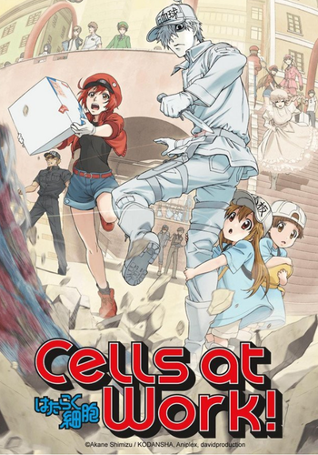
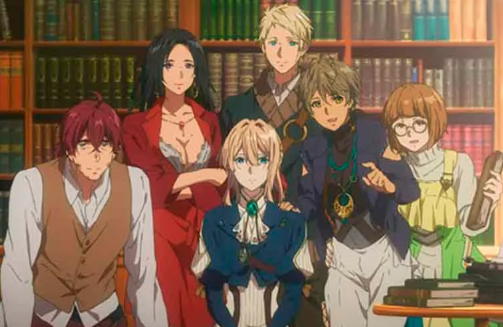

-
Año: 2018
-
Escritor: Reiko Yoshida
-
Animación: Shinchiro Hatta, Shinichi Nakamura, Kazusa Umeda & Shigery Saito
-
Estudio: Kyoto animation
-
Música: Evan Call
-
Género: Drama, ciencia ficción y fantasía
-
Personajes principales: Violet Evergarden & Gilbert Bougainvillea
Violet Evergarden es una joven huérfana que desde pequeña fue tomada por el ejército de Leiden como arma de guerra, sin embargo el comandante Gilbert Bougainvillea, que estaba a cargo de ella, no la trataba de esta manera. Una vez acabada la guerra, tuvo que abandonar el campo de batalla y separarse de este mismo, sin siquiera poder entender ciertas palabras que recibió de su comandante en el último encuentro. Violet queda al cuidado de Claudia Hodgins, compañero y amigo de Gilbert, además de ser recibida por la familia Evergarden por órdenes de Gilbert. Así, Violet comienza a trabajar en la Compañía Postal CH y conmovida por el oficio de Auto Memory Doll que llevan los pensamientos de la gente y los convierten en palabras por medio de cartas decide convertirse en una para obtener respuestas sobre las últimas palabras de Gilbert.

Integrantes de la compañía postal CH
Personajes principales


Datos curiosos
- La novela ligera original ganó el gran permio de los premios Kyoto Animations en 2014.
- El estudio Kyoto es reconocido por su enorme calidad de animación.
- El episodio 10 es considerado el capítulo más emotivo e incluso fue nominado a premios internacionales.